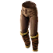

Открыть в интерактивной вики →
| Требуемый уровень | 40 |
|---|---|
| Редкость | Сет |
| Улучшения | звёзды, орбы, осколки |
| Тип | Штаны |
| Цена | 200 000 |
| Ремонт | 80к |
| Заряды | 10 000 |
| Зарядка | 2 |
| Мощь | 4 |
| Знание | 10 |
| Здоровье | 80 |
| Мана | 40 |
| Сопр. рубящим | 25 |
| Сопр. дробящим | 27 |
| Сопр. колющим | 26 |
| Сопр. менталу | 20 |
Комплект
Облик Геноцида
Дроп

Модификаторы
Шанс уклонения +10
Шанс двойной атаки +6
Шанс двойной атаки +6